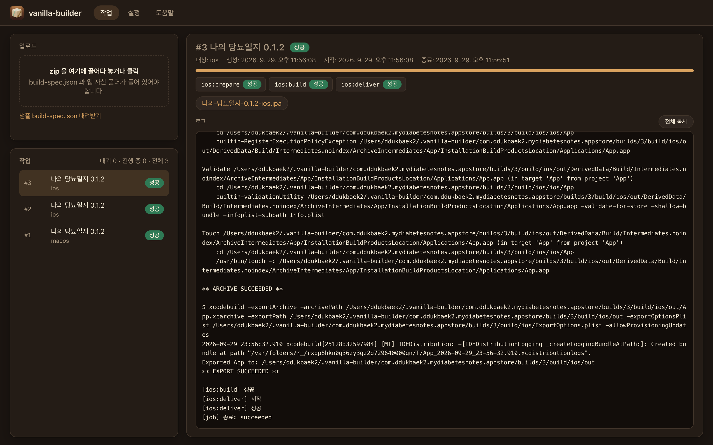

웹 빌드 결과물과 명세 파일 하나를 보내면, Mac 에서 돌아가는 vanilla-builder 가 macOS 와 iOS 앱을 만들어 돌려줍니다. 저장소도, 파이프라인 설정도 필요 없습니다.

Jenkins 의 편한 부분만 남기고, 나머지는 덜어냈습니다.
Git 저장소를 연결하지 않습니다. 웹 빌드 결과물과 build-spec.json 을 zip 으로 묶어 보내면 끝입니다.
작업은 순서대로 쌓여 하나씩 돌고, 브라우저에서 단계와 로그를 실시간으로 봅니다. 중간에 취소도 됩니다.
Electron 으로 .dmg 를, Capacitor 와 Xcode 로 서명된 .ipa 를 만듭니다. 네이티브 프로젝트는 서버가 알아서 생성합니다.
launchd 서비스로 로그인과 함께 뜨고, 메뉴 막대 아이콘으로 상태를 확인합니다. 설정은 웹에서 바꿉니다.
작업 PC 가 Windows 여도 괜찮습니다. Mac 이 꼭 해야 하는 일만 Mac 이 합니다.
작업 PC 에서 npm run build 로 build/web 을 만듭니다.
클라이언트 도구나 curl, 또는 현황 페이지에 끌어다 놓아 zip 을 올립니다.
빌드가 끝나면 현황 페이지나 API 에서 .dmg 와 .ipa 를 내려받습니다.
Mac 에서 한 번만 하면 됩니다.
unzip vanilla-builder-macos.zip
cd vanilla-builder
sh scripts/install.shlaunchd 사용자 에이전트로 등록되어 로그인할 때마다 자동으로 뜹니다. 현황 페이지는 http://localhost:8686 이고, 포트와 워크스페이스는 설정 화면에서 바꿉니다. 해제는 sh scripts/uninstall.sh 입니다.
{
"specVersion": 1,
"app": { "id": "com.example.mygame", "name": "My Game", "version": "1.0.0" },
"source": { "webDir": "web" },
"targets": {
"macos": {},
"ios": { "teamId": "ABCDE12345", "plugins": [] }
}
}build-spec.json 은 이것이 전부입니다. 필드 설명은 현황 페이지의 도움말에 있습니다.
작업 PC 에서 명령 한 줄로 묶고, 보내고, 받습니다. Node.js 18 이상, 외부 패키지 없음.
node vanilla-pack.mjs init . # build-spec.json 초안
node vanilla-pack.mjs send http://mac-address:8686 . --targets macos # 묶어서 보내고 dist/ 에 받기
node vanilla-pack.mjs pack . --out project.zip # zip 만 만들기